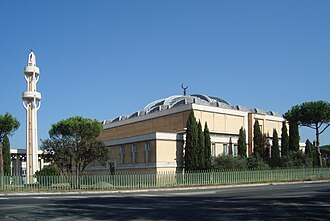

Tanıtım
La mosquée de Rome se trouve dans la partie nord de Rome dans le quartier de Parioli sur le viale della Moschea. Elle forme la plus grande mosquée d'Europe, avec plus de 30 000 m2 de terrain et pouvant accueillir 12 000 fidèles.
مسجد روما الكبير، يقع في الجزء الشمالي من مدينة روما، في منطقة البريولي. وهو يشكل أكبر مسجد في أوروبا، مساحته تزيد على 000 30 متر مربع، ويمكن أن يستوعب الآلاف من المصلين ويضم المركز الثقافي الإسلامي في إيطاليا( itali). بالإضافة إلى أنه نقطة تَجمّع ومرجعية في المجال الديني، يضم أيضاً خدمات ثقافية واجتماعية متصلة بطرق مختلفة مع العقيدة الإسلامية: احتفالات زواج، جنازة وتأويل (Exegesis)، ومؤتمرات، وما شابه ذلك.
The Mosque of Rome, also known as the Great Mosque of Rome, is a Friday mosque situated in Parioli, Rome, Italy. With a land area of 30,000 square metres (320,000 sq ft), it is the largest mosque in the Western world and can accommodate more than 12,000 worshipers. The building is located in the Acqua Acetosa area, at the foot of the Parioli Mounts, north of the city. It is also the seat of the Italian Islamic Cultural Centre.
Masjid Roma, yang terletak di Parioli, adalah masjid terbesar di luar dunia Islam, Rusia dan India. Masjid tersebut memiliki luas 30.000 m2 (320.000 sq ft) dan dapat menampung lebih dari 12,000 orang. Bangunan tersebut terletak di kawasan Acqua Acetosa, di kaki Monti Parioli, utara kota. Sebagai masjid terbesar di dunia Barat, masjid tersebut adalah kursi dari Pusat Kebudayaan Islam Italia.
روم کی مسجد روم ، اٹلی میں واقع ہے۔ رقبے کے لحاظ سے مغربی دنیا کی سب سے بڑی مسجد ہے۔ اس کا رقبہ 30,000 میٹر2 (320,000 فٹ مربع) ہے اور 12,000 سے زیادہ افراد یہاں نماز اد کرسکتے ہیں۔ یہ مسجد شہر کے شمال میں مونٹی پاریولی کے دامن میں اکو ا اکیٹوسا علاقے میں واقع ہے۔ اس میں اطالوی اسلامی ثقافتی مرکز بھی قائم ہے۔
Die Moschee von Rom befindet sich im Norden der Stadt am Fuße des Monte Parioli, in der Gegend von Acqua Acetosa, und ist eine der größten Moscheen außerhalb der islamischen Länder. Die zentrale Gebetshalle kann etwa 2500 Gläubige aufnehmen.
La Gran Mezquita de Roma es el principal lugar de culto de la comunidad musulmana en Roma, y el mayor de Italia y de Europa. El edificio se sitúa en la zona norte de la ciudad, a los pies de los montes Parioli, al lado de las instalaciones deportivas de Acqua Acetosa, y es sede del Centro islamico culturale d'Italia.
La Grande Moschea di Roma è il principale luogo di culto della comunità musulmana a Roma ed è la più grande moschea d'Europa.
Grande Mesquita de Roma é a maior mesquita em termos de área construída já erigida no hemisfério ocidental e está situada na Vialle della Moschea, no quartiere Parioli de Roma, um bairro chamado Acqua Acetosa, no sopé do monte Parioli.
De Moskee van Rome ligt in het noordelijke deel van de Italiaanse hoofdstad Rome in de Rione di Parioli aan de Viale della Moschea. Het vormt de grootste moskee van Europa, met meer dan 30.000 m² grond en biedt plaats aan 12.000 gelovigen.
Соборная Римская мечеть расположена в городе Рим в Италии, в квартале Париоли. Вмещает до 12 000 молящихся одновременно и на момент открытия считалась крупнейшей в континентальной западной Европе.
มัสยิดโรม เป็นมัสยิดในปาริโอลี โรม ประเทศอิตาลี และเป็นมัสยิดที่ใหญ่ที่สุดในโลกตะวันตกในแง่ของพื้นที่ใช้สอย ด้วยขนาด 30,000 ตารางเมตร ซึ่งสามารถรองรับความจุได้ 12,000 คน รวมถึงเป็นที่ตั้งของศูนย์วัฒนธรรมอิสลามประจำอิตาลี
Ang Mosque ng Roma, na matatagpuan sa Parioli, Roma, Italya, ay ang pinakamalaking mosque sa kanluraning mundo sa lawak ng sakop. Mayroon itong lugar na 30,000 metro kuwadrado (320,000 sq ft) at kayang tumanggap ng higit sa 12,000 katao. Ang gusali ay matatagpuan sa lugar ng Acqua Acetosa, sa paanan ng Monti Parioli, hilaga ng lungsod. Ito rin ang upuan ng Sentro ng Kulturang Islamiko ng Italya.
Moscheea din Roma este o moschee din orașul Roma, capitala Italiei. Edificiul este totodată, sediul Centrului Cultural Islamic Italian și are o suprafață de aproximativ 30.000 de metri pătrați. Acest lucru o face cea mai mare moschee din Europa.
Haritada
Belgeler ve bağlantılar
- Wikipédia — Français
- Wikipédia — العربية
- Wikipédia — English
- Wikipédia — Türkçe
- Wikipédia — Bahasa Indonesia
- Wikipédia — اردو
- Wikipédia — Deutsch
- Wikipédia — Español
- Wikipédia — Italiano
- Wikipédia — Português
- Wikipédia — Nederlands
- Wikipédia — 中文
- Wikipédia — Русский
- Wikipédia — ไทย
- Wikipédia — Filipino
- Wikipédia — Română
- Wikidata — Q1789776
Veriler: Wikidata (CC0), her 3 ayda bir güncellenir. Yıl, binanın bilinen en eski inşa tarihidir: sonradan camiye dönüştürülmüş bir yapı için (Ayasofya gibi) özgün binanın tarihidir. Fotoğraflar: Wikimedia Commons, yazar ve lisans her fotoğrafın sayfasında.